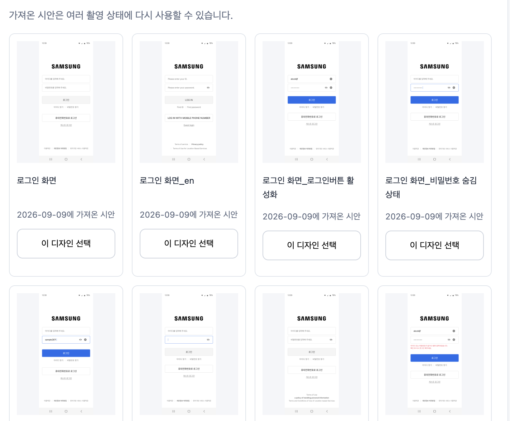

ANDROID · 촬영 시나리오 검증삼성통근버스(BUS)
시안에서 만든 촬영 TC로 실제 앱의 상태를 재현해 보았습니다.
2026.09.09 · SM-S911N · 실제 캡처 1080 × 2340
4개 재촬영abcddjf 아이디•••••••• 숨김 8개sample287! 표시 문자열
시안에 적힌 입력 내용까지 맞추는 규정을 적용했습니다.아래는 새로 촬영한 실제 앱 화면입니다. 숨김 비밀번호는 점 8개, 표시 비밀번호는 sample287!로 각각 재현했습니다. 두 시안의 입력 길이는 별개입니다.
입력값 일치와 버튼·포커스 상태를 나누어 확인합니다. 검수 통과나 오류 확정은 아닙니다. 영문과 반복 안정성·개선율은 미검증입니다.
입력 규정 · 수정 TC · 이전 탐색 기록
입력은 맞췄지만 버튼 상태가 다른 화면
아이디가 빈칸으로 보이는 숨김·표시 시안은 파란 로그인 버튼을 보여줍니다. 실제 앱은 같은 입력 내용으로 촬영해도 회색 버튼이었습니다. 숨김 화면의 비밀번호 포커스는 이번 조작으로 재현됐습니다.
한 번의 재현 결과이며 디자인 또는 개발 오류로 확정하지 않았습니다. 원본 프레임의 아이디 빈칸 의도와 버튼 조건은 확인이 필요합니다.
기준으로 사용한 디자인 목록 보기
사용자가 제공한 축소 목록입니다. 원본 프레임과 정확한 촬영 영역은 아직 확보하지 않았습니다.

검증 범위와 남은 확인
- 별도 검증자가 실제 캡처와 시안을 대조했습니다.
- 영문 화면은 언어 변경 경로를 확인하지 못해 실행하지 않았습니다.
- 기존 방식과 비교하거나 각 상태를 3회 반복한 결과는 아닙니다.
- 임시 문자열만 사용했고 로그인은 제출하지 않았습니다. 입력값 제거도 확인했습니다.
입력값 제거 후 화면 · 실행 관찰 데이터 · 촬영 TC 문서